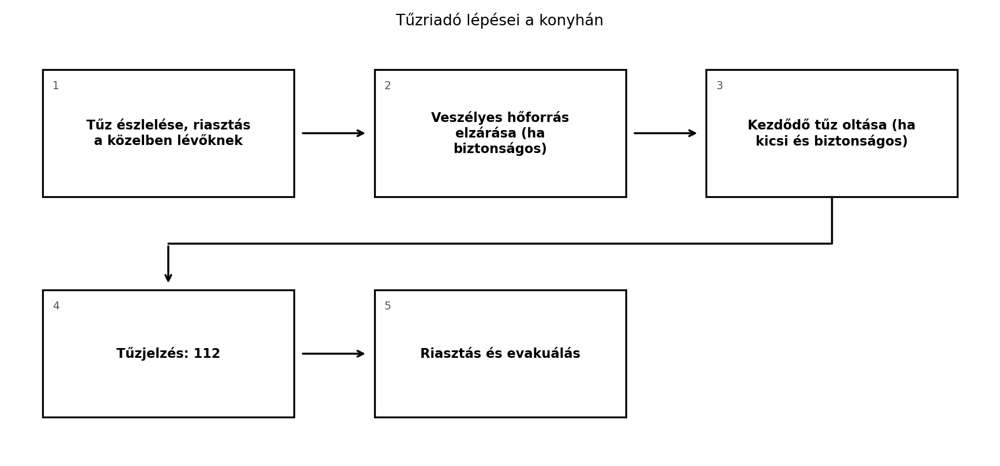

Egy étterem konyhájában déli csúcsforgalom van. A fritőzben bő zsiradék melegszik, a gázsütő alatt ég a láng, a szeletelőgép mellett pedig papírtörlő hegyekben áll. Amikor a fritőz olaja hirtelen füstölni kezd, a szakácsnak másodpercek alatt kell helyesen döntenie: elzárja a hőforrást, oltóeszközt választ, vagy tűzriadót indít. A tűzvédelem nem külön elméleti tantárgy, hanem minden nyugodt nap és minden hirtelen baj helyzete. Aki a konyhán dolgozik, annak ismernie kell az égés feltételeit, a tűzosztályokat, a tűzoltó készülékeket és a menekülés lépéseit, hogy baj esetén ne pánikoljon, hanem cselekedjen.
Képzeld el, hogy reggel a konyhán átnézed a napi feladatokat. A fritőz olajszintje megfelelő, az elszívóernyő tisztán csillog, a tűzoltó készülékek a kijelölt helyükön, a menekülési útvonal szabadon járható. Ez a nyugalom akkor válik biztonsággá, ha mindenki tudja, mit kell tennie, ha a csillogás hirtelen lánggá válik. A tűzriadó lépései egy egyszerű folyamatra vezethetők vissza:

Definíció. A tűz olyan égés, amely ellenőrizetlenül terjed, és hőt, lángot, füstöt vagy kárt okoz. A konyhai tűzvédelem arra épül, hogy az égés feltételeit ismerjük, és legalább az egyiket el tudjuk vonni.
Az égés feltételei:
Összefüggés. A tűzoltás elve, hogy az égés valamelyik feltételét megszüntetjük: hűtjük a tüzet, elzárjuk az oxigént, eltávolítjuk az éghető anyagot, vagy megakadályozzuk a további kémiai reakciót. A víz például hűt, a fém fedő elzárja az oxigént, a gázcsap elzárása megszünteti az éghető anyag utánpótlását.
A konyhában a gyújtóforrások és az éghető anyagok gyakran egymás mellett vannak. A leggyakoribb konyhai gyújtóforrások:
A megelőzés első lépése, hogy az éghető anyagokat (olaj, papír, konyharuha, műanyag fólia) távol tartjuk a gyújtóforrástól, és a készülékeket rendeltetésszerűen használjuk.
Szabály. A konyhán a tűzvédelem alapja a forró berendezések felügyelete: a bő zsiradékos sütést, a fritőz működését, a grillt soha ne hagyjuk őrizetlenül. Ha a készülék meghibásodik, áramtalanítani kell, és csak szakember javíthatja.
A tűzoltó készülékek nem minden tűzre egyformán alkalmasak. A tűzosztályok megmutatják, milyen anyag égésére tervezték az oltóeszközt.
| Tűzosztály | Égő anyag | Megfelelő oltóeszköz | Megjegyzés |
|---|---|---|---|
| A | Szilárd, parázsló anyagok: fa, papír, textil | víz, hab, ABC por | A víz hűt, a hab elzárja az oxigént. |
| B | Folyadékok, olvadó anyagok: benzin, alkohol, festék | hab, por, szén-dioxid (CO₂) | A víz szétfröcskölheti az égő folyadékot. |
| C | Gázok: metán, propán, földgáz | por, szén-dioxid, gázcsap elzárása | A lángot gázszivárgáskor csak a gázcsap elzárásával lehet biztonságosan megszüntetni. |
| D | Fémek: magnézium, alumíniumpor | speciális fémporral oltó | Vízzel tilos oltani, mert robbanásveszélyt okoz. |
| F | Étolaj, zsiradék | F osztályú oltókészülék, oltótakaró, fém fedő | A víz tilos: a forró zsiradék szétrobban. |
Az elektromos tüzekre nincs külön tűzosztály; a készülék jelöli, ha alkalmas elektromos tűz oltására (például szén-dioxiddal vagy porral oltó). Áram alatt lévő elektromos berendezést vízzel oltani tilos, először áramtalanítani kell.
Definíció. A tűzosztály betűjele (A, B, C, D, F) azt mutatja, milyen égő anyag oltására alkalmas az oltóeszköz. A konyhán mindig legyen elérhető F osztályú oltóeszköz a zsiradéktűzhöz, és oltótakaró a kisebb tüzekhez.
Jogszabály. A tűzoltó készülékek elhelyezését, típusát és ellenőrzését az Országos Tűzvédelmi Szabályzat (OTSZ) és az üzemi tűzvédelmi szabályzat határozza meg. A pontos követelmények a hatályos OTSZ szerint ellenőrizendők (ellenőrizendő: OTSZ hatályos szövege, tűzoltó készülékek jelölése). A készüléken lévő címke és a tűzvédelmi szabályzat a mérvadó.
A zsiradéktűz a konyha egyik legveszélyesebb tüze. A forró olaj vagy zsír öngyulladásig melegedhet, és ha vizet öntünk rá, a víz hirtelen gőzzé válik, a gőz kirobban, és a forró zsiradék szétfröccsen, lánggömböt okozva. Ezt minden szakácsnak tudnia kell, mielőtt bő zsiradékban sütne.
Tilos. Zsiradéktüzet vízzel oltani tilos. A víz a forró zsiradékon hirtelen elgőzölög, a zsír szétfröccsen, és a tűz szétrobban. Ugyanezért ne öntsünk vizes edényt vagy nedves konyharuhát az égő zsírra.
Szabály. A zsiradéktűz helyes oltása:
Az alábbi képsor ugyanezt az öt lépést mutatja, a hatodik kocka pedig azt, ami vízzel oltáskor történik. A 2. kockán figyeld meg a mozdulatot: a fedő oldalról, vízszintesen érkezik, a kéz és a test a fedő mögött marad – felülről ráejtve vagy magad felé nyitva a láng a karodra, az arcodba csaphat.
A TILOS kocka a legfontosabb: a víz a forró, égő olajba jutva egy pillanat alatt gőzzé válik, és a gőz kirobbantja az égő zsiradékot. Az égő edényt soha ne vidd ki és ne tedd a mosogatóba. A HTML-kiadásban a ⏮ ◀ ▶ gombokkal lépésenként, nagyítva nézheted meg a kockákat.
A tűzoltó készülék használatának alapelve: húzd ki a biztosítószeget, célozd meg a tűz alapját, nyomd meg a kart, és söpörd az oltóanyagot a tűz alapján. A pontos használatot a tűzvédelmi oktatáson és a készülék címkéjén tanítják.
Hogy a négy lépést gyorsan végre tudd hajtani, ismerned kell a készülék részeit. Az alábbi ábra bal oldalán a kézi tűzoltó készülék nyolc fő része látható (a nyomásmérő nem minden típuson van), jobbra a használat négy lépése, alul pedig a tűzosztályok jelei, amelyek a készülék címkéjén (2) mutatják, mire alkalmas. Jobbra lent az oltótakaró tartója: a két szalagot egyszerre, lefelé húzva veszed ki.
Ellenőrzési pont: műszakkezdéskor nézd meg, hogy a konyhai készüléken ott van-e a plombás biztosítószeg, és a címkén szerepel-e az F jel – ha nem, az a készülék nem zsiradéktűzre való. A tűzosztály-jelek saját rajzolásúak; a készülékek típusát, elhelyezését és felülvizsgálatát az OTSZ és az üzemi tűzvédelmi szabályzat írja elő (ellenőrizendő: OTSZ, MSZ EN 2, MSZ EN 3).
A tűzjelzés nem késlekedhet. Ha a tűz nem uralható, vagy már füsttel, nagy lánggal terjed, azonnal értesíteni kell a tűzoltókat és el kell hagyni a veszélyzónát.
Eljárás. A tűzriadó lépései a konyhán:
Jogszabály. A munkavállaló köteles a tűzriadó tervet ismerni, a tűzvédelmi oktatáson részt venni, és a tüzet az előírt módon jelezni. A tűzriadó terv az üzemi tűzvédelmi szabályzat része, és a munkáltató köteles azt a dolgozókkal megismertetni (ellenőrizendő: OTSZ vonatkozó előírásai).
A modern konyhákban a tűzvédelmet beépített eszközök is segítik:
Karbantartás. A beépített tűzjelző és oltóberendezést rendszeresen ellenőrizni kell, és az érzékelőket, az oltófejet, a kézi jelzésadókat nem szabad letakarni, festeni vagy akadályozni. Az elszívóernyő zsírszűrőit pedig a gyártói utasítás szerint kell tisztítani, mert a lerakódott zsír éghető réteget alkot.
A tűzvédelmi szabályzat az üzemre szabott dokumentum, amely tartalmazza:
Jogszabály. A munkáltató tűzvédelmi oktatást köteles tartani a munkavállalóknak, és a tűzoltó készülékeket, a menekülési útvonalakat, a tűzjelző berendezéseket karbantartani. A munkavállaló köteles a tűzvédelmi szabályzatot betartani, a tüzet vagy tűzveszélyt azonnal jelezni, és a tűzvédelmi oktatáson részt venni. A részletszabályokat az OTSZ és az üzemi tűzvédelmi szabályzat tartalmazza (ellenőrizendő: hatályos OTSZ, üzemi szabályzat).
Követelmények a dolgozóra:
Egy étterem konyháján a fritőz termosztátja meghibásodott, és az olaj hirtelen túlhevült. A szakács látta, hogy a fritőz felett sűrű füst kezd felszállni, majd a felület lángra kap. A tanuló a mosogató felé indult, hogy vizet húzzon, de a séf megállította. A séf először elzárta a fritőz áramellátását, majd fém fedővel letakarta a készüléket, és oltótakarót borított rá, majd a takarót a kihűlésig a helyén hagyta. A tűz néhány másodperc alatt kialudt. A helyszínen lévő F osztályú készüléket csak tartalékként tartotta készenlétben, és az esemény után azonnal hívta a tűzvédelmi felelőst, hogy vizsgálják meg a termosztátot. A tanulság: a víz használata súlyos tűzgolyót okozott volna, a helyes sorrend pedig a hőforrás elzárása és az oxigén elvonása volt.
Továbbvitt eredmény. A zsiradéktűz oltásának szabálya és a tűzriadó lépései a Munkavégzés személyi feltételei és a munkaeszközök biztonsága alfejezetben az eszközök biztonságos használatánál, valamint az Ételkészítés, flambírozás, szeletelés és tálalás a vendég asztalánál alfejezetben a flambírozás biztonsági szabályainál tér vissza.
A tűzvédelem is ellenőrizhető, és a rendszeres ellenőrzés megelőzi a bajt.
A napi záráskor és a műszak elején érdemes rövid tűzvédelmi körbejárást tartani, és a hibát azonnal jelenteni.
Zsiradéktüzet vízzel próbálnak oltani.
Ok: a víz tűzoltásra ismert, de a forró zsírra öntve
gőzrobbanást okoz.
Helyes gyakorlat: hőforrás elzárása, fedő vagy oltótakaró, F
osztályú készülék.
Áram alatt lévő elektromos készüléket vízzel
oltanak.
Ok: áramütés veszélye, a víz vezeti az áramot.
Helyes gyakorlat: először áramtalanítani, majd szén-dioxiddal
vagy porral oltó készülékkel oltani.
A tüzet nem jelzik azonnal, mert előbb megpróbálják
egyedül megfékezni.
Ok: a tűz gyorsan terjed, a füst mérgező.
Helyes gyakorlat: ha a tűz nem kisméretű, vagy az oltás
kétséges, azonnal jelezni, és megkezdeni az evakuálást.
A menekülési útvonalat dobozokkal, ládákkal
eltorlaszolják.
Ok: raktározási kényelem, de a menekülés késlekedik.
Helyes gyakorlat: a menekülési útvonal mindig szabad, a
jelzések láthatók.
Égő ruhán futni kezd az ember.
Ok: pánik, a mozgás szítja a lángot.
Helyes gyakorlat: a földre kell feküdni, arcot védeni, gurulni,
vagy takaróval elfojtani a lángot.
A válaszok a Megoldások elején találhatók.
1. feladat (A)
Sorold fel az égés négy feltételét, és nevezz meg mindegyikhez egy
konyhai példát.
2. feladat (A)
Válaszd ki, hogy az alábbi tűzesetek közül melyiket milyen oltóeszközzel
lehet biztonságosan oltani: (a) égő papírdoboz, (b) égő olaj a
fritőzben, (c) égő gázláng a gázsütőben.
3. feladat (B)
Rendezd sorrendbe a tűzriadó lépéseit: tűzjelzés, evakuálás, hőforrás
elzárása, kezdődő tűz oltása, menekülési útvonal követése, tűz
észlelése. Miért pont ez a sorrend?
4. feladat (B)
A konyhán a fritőz olaja kigyullad. A szakács a mosogató felé rohan,
majd visszatér egy vödör vízzel. Elemezd a hibát: mi történhet, és mi a
helyes teendő?
5. feladat (C)
Készíts ellenőrzőlistát a konyha napi tűzvédelmi záráshoz. Az alábbi
szempontok közül válaszd ki a legfontosabbakat: gázcsapok állapota,
tűzoltó készülékek helye, menekülési út szabadsága, elszívó szűrők
zsírtartalma, elektromos készülékek áramtalanítása, hűtő hőmérséklete.
Indokold a választásod!
6. feladat (D)
Gyakorold el a tűzriadó szituációt egy társaddal vagy írásban. Tegyél
fel egy tűzesetet (például sütőlap melletti konyharuha lángra kap). Írd
le a teendőket lépésről lépésre, és fogalmazd meg a 112-es hívás pontos
szövegét: mi ég, hol ég, van-e sérült, mi a neved.
Önellenőrzés – válaszok
1. feladat megoldása (A)
Éghető anyag: sütőolaj, papír, konyharuha. Oxigén: a konyha levegője.
Gyulladási hőmérséklet: a fritőz túlhevült olaja, a gázláng. Kémiai
láncreakció: az égés önmagát fenntartó folyamata, például az izzó parázs
továbbterjedése.
2. feladat megoldása (A)
(a) A osztályú tűz: vízzel, habbal vagy ABC porral oltó.
(b) F osztályú tűz: F osztályú oltókészülék, oltótakaró, fém fedő.
(c) C osztályú tűz: a gázcsap elzárása, porral vagy szén-dioxiddal oltó;
a láng csap nélküli elnyomása gázszivárgás veszélyét hagyja.
3. feladat megoldása (B)
Sorrend: 1. tűz észlelése és a közelben lévők riasztása (kiáltás); 2.
hőforrás elzárása (ha biztonságos); 3. kezdődő tűz oltása (ha kicsi és
biztonságos); 4. tűzjelzés; 5. evakuálás; 6. menekülési útvonal
követése. Ez a sorrend azért logikus, mert a kezdeti, kisméretű tüzet
még meg lehet fékezni, de a jelzés nem késlekedhet, ha az oltás
sikertelen vagy veszélyes, a menekülést pedig a tűz elzárhatja.
4. feladat megoldása (B)
A hiba: vízzel próbálják oltani a zsiradéktüzet. A víz a forró olajjal
érintkezve azonnal gőzzé alakul, a gőz kirobbantja a forró zsiradékot,
lánggömböt okoz, és a tűz szétterjed. Helyesen: a fritőz áramellátását
el kell zárni, az edényt fém fedővel vagy oltótakaróval le kell takarni,
és F osztályú oltókészüléket kell használni; nagyobb tűznél azonnal
jelezni kell.
5. feladat megoldása (C)
Választható, de legfontosabb szempontok: gázcsapok állapota (elzárva,
nem szivárog), tűzoltó készülékek helye (megvannak, hozzáférhetők,
nyomásmérő zöld), menekülési út szabadsága (nem torlaszolt), elszívó
szűrők zsírtartalma (tiszták, mert a zsír éghető), elektromos készülékek
áramtalanítása (éjszakára, ha nem szükséges). A hűtő hőmérséklete nem
tűzvédelmi, hanem élelmiszer-biztonsági ellenőrzés, ezért nem ide
tartozik.
6. feladat megoldása (D)
Tűzeset: a sütőlap melletti konyharuha lángra kap. Teendők: 1. elzárom a
sütőlap gázlángját vagy áramtalanítom; 2. a tüzet azonnal letakarom
oltótakaróval, vagy fedővel elfojtom, ha kisméretű; 3. ha a tűz nagyobb,
hívom a 112-t; 4. a 112-es hívás: „Bemutatom magam, elmondom, hogy a …
étterem konyháján konyharuha tüze terjed, a címen …, a tűz a sütőlapnál
van, sérült nincs, a menekülési út járható.” 5. riasztom a
konyhafőnököt, segítek az evakuálásban; 6. a menekülést a zöld jelzések
mentén végzem, liftet nem használok; 7. senki nem megy vissza.
A konyhai tűzvédelem az égés feltételeinek (éghető anyag, oxigén, gyulladási hőmérséklet, kémiai láncreakció) ismeretére épül. A leggyakoribb gyújtóforrások: gázláng, túlhevült zsiradék, elektromos készülék rövidzárlata, forró felületek, nyílt láng. A tűzoltó készülékeket tűzosztály szerint választjuk: A (szilárd), B (folyadék), C (gáz), D (fém), F (zsiradék). A zsiradéktüzet vízzel oltani tilos, mert a víz gőzrobbanást okoz. A helyes oltás: hőforrás elzárása, fedő vagy oltótakaró, F osztályú készülék. A tűzriadó lépései: tűz észlelése, hőforrás elzárása, kezdődő tűz oltása, tűzjelzés a 112-es számon, riasztás, evakuálás, menekülési útvonal követése, lift nélkül. A dolgozó köteles ismerni a tűzvédelmi szabályzatot, a menekülési útvonalat és az oltóeszközök helyét. A zsiradéktűz oltásának szabálya és a tűzriadó lépései továbbviendő eredmény: a Munkavégzés személyi feltételei és a munkaeszközök biztonsága és az Ételkészítés, flambírozás, szeletelés és tálalás a vendég asztalánál alfejezetekben alkalmazzuk.